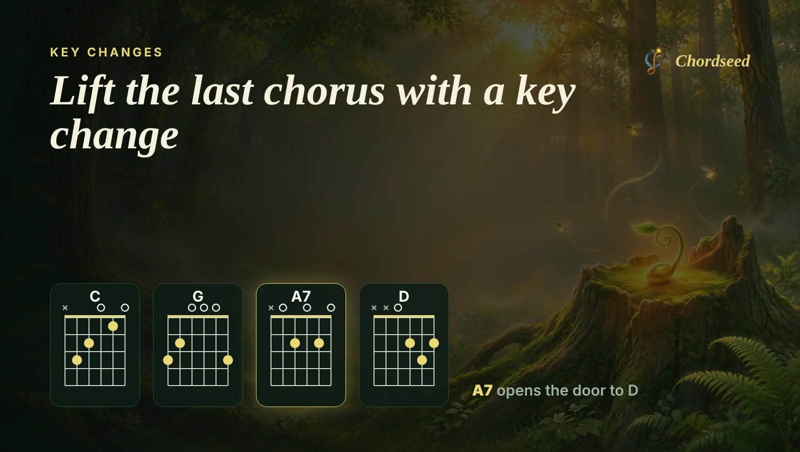

Cómo cambiar de tonalidad en una canción (y subir el último coro)
Un cambio de tonalidad puede hacer que el último coro despegue. Mal hecho, suena a error. Aquí tienes tres formas de hacerlo, de la más dramática a la más suave.

¿Para qué cambiar de tonalidad?
Cuando una canción repite el coro varias veces, la energía puede bajar. Subir todo le da al oyente un impulso nuevo sin escribir nada más. Algunas canciones cambian de tonalidad entre la estrofa y el coro para crear contraste, y otras (como “Love on Top” de Beyoncé) lo hacen varias veces seguidas por pura diversión.
1. El salto repentino
Simplemente para y empieza el siguiente coro uno o dos semitonos más arriba. Sin preparación. Es atrevido y muy común en baladas pop; “I Will Always Love You” de Whitney Houston es el ejemplo clásico, justo después de la pausa dramática.
Subir un tono (dos trastes) es el salto más seguro. Medio tono (un traste) es más sutil. Más que eso y quien canta empieza a sufrir.
2. El truco de la dominante
Para que el salto se sienta preparado, toca el acorde V7 de la tonalidad nueva justo antes. Ese acorde crea una tensión que solo la tonalidad nueva puede resolver.
| De C a… | Toca antes | Distancia |
|---|---|---|
D♭ | A♭7 | medio tono arriba |
D | A7 | un tono arriba |
E♭ | B♭7 | tercera menor arriba |
F | C7 | una cuarta arriba |
G | D7 | una quinta arriba |
A | E7 | a una tonalidad más brillante |
La regla es simple: el acorde previo se construye sobre la nota que está cinco grados arriba de la tonalidad nueva, con 7.
3. El acorde pivote
El método más suave. Busca un acorde que pertenezca a las dos tonalidades y úsalo como puente. Do mayor y Sol mayor comparten C, Em, G y Am. Si tocas Am, el oído lo escucha como parte de C… y luego lo tratas como parte de G:
Este cambio es tan suave que mucha gente no lo nota. Solo siente que la canción se abrió.
Extra: ve a la relativa menor
Do mayor y La menor usan exactamente las mismas notas. Llevar tu estrofa a Am (con un E7 antes) te da una sección más oscura sin aprender notas nuevas.
Lista rápida
- Elige la tonalidad nueva según el rango de quien canta, no solo según la guitarra.
- Prepárala con el V7 de la tonalidad nueva, salvo que quieras un sacudón repentino.
- Cambia de tonalidad al empezar una sección, no a mitad de una frase.
- Cuando llegues, quédate el tiempo suficiente para que el oído la acepte como casa.
Pruébalo en Chordseed
Usa Cambiar de tonalidad en Chordseed: elige dónde estás y a dónde quieres ir, y te muestra caminos para llegar, con los acordes puente y pivote marcados, toca cada uno y dibuja el recorrido en el círculo de quintas. Gratis, en tu navegador.
Abrir la app →